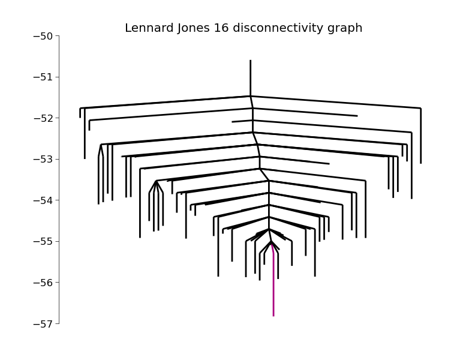
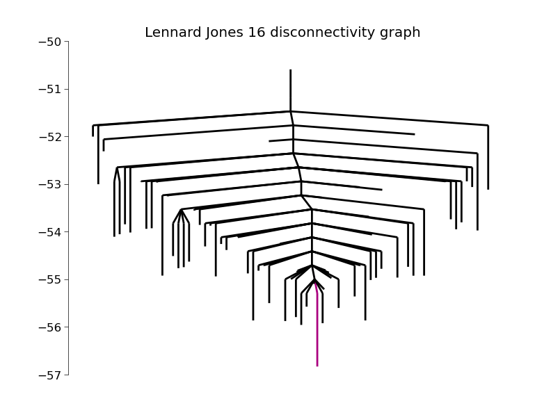

Disconnectivity Graphs¶
Disconnectivity graphs are an important way of visualizing the connectivity of an energy landscape. In a disconnectivity graph the graph is broken up at several levels of energy Elevel into groups of minima (basins) that are connected by transition states of energy less than Elevel.
 

| DisconnectivityGraph(graph[, minima, ...]) | make a disconnectivity graph |
In order to create a disconnectivity graph, you must have a database, or a graph, of minima and transition states. These can be generated by using basinhopping to find the minima and DoubleEndedConnect to find the transition states connecting them. Assuming you already have a database, here is how you turn it into a disconnectivity graph.
First you must convert the database to a networkx graph. This can be done via the following
from pele.utils.disconnectivity_graph import database2graph
graph = database2graph(database)
Now we pass the graph to the class DisconnectivityGraph
from pele.utils import DisconnectivityGraph
dg = DisconnectivityGraph(graph)
dg.calculate()
Finally, we plot it using matplotlib
import matplotlib.pyplot as plt
dg.plot()
plt.show()
See the matplotlib package for further options. I’ll just mention one here, saving the figure to a file.
plt.savefig("tree.pdf")
disconnectivity graph script¶
There is a handy script in pele which lets you create a disconnectivity graph from a database file directly from the command line. see the file
pele/scripts/make_disconnectivity_graph.py